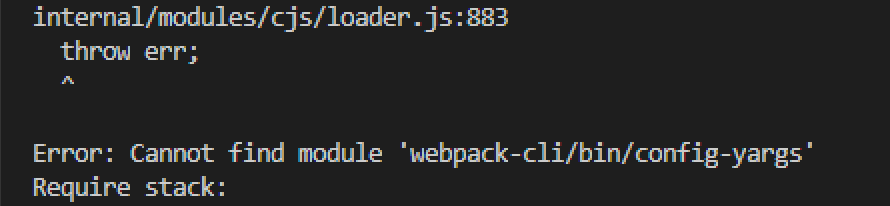

两种方法解决Error: Cannot find module 'webpack-cli/bin/config-yargs'
这篇文章发布于 2020/12/07，归类于 前端工程化
标签：
Error: Cannot find module 'webpack-cli/bin/config-yargs'
在运行 webpack-dev-server 这个命令时，如果出现了 Error: Cannot find module 'webpack-cli/bin/config-yargs' 这个错误，是因为默认情况下 webpack-dev-server 执行依赖 webpack-cli 包目录下的 bin/config-yargs，但 webpack-cli 4.1.0 的版本，做了一些调整，删除了这个文件，导致了这个错误。

"webpack": "^5.1.3",
"webpack-cli": "^4.1.0",
"webpack-dev-server": "^3.11.0"有两种解决方法
- 将 webpack-cli 降级到 3.x版本, "webpack-cli": "^ 3.3.12"
- 使用 webpack 5.x 中用于替代 webpack-dev-server 命令的 webpack serve 命令。其实它内部还是使用的 webpack-dev-server 这个包
// package.json scripts
"dev:server": "webpack serve --config webpack.dev.js"参考：Error: Cannot find module 'webpack-cli/bin/config-yargs' · Issue #1948 · webpack/webpack-cli